Strategic operations work for THEY and Motherson Group. Click any project to read the full case study.
Led the full project for Osaka in Numbers — a first-of-its-kind benchmark on self-built country pavilions at Expo 2025. The methodology future Expo teams will inherit.
Strategy decks with one job — make the complex read in seconds. For the Chairman’s and Vice-Chairman’s offices, investors, employees, and partners; from a whole company philosophy on one frame to dense B Corp and Expo data. The slides below are samples — more on request.
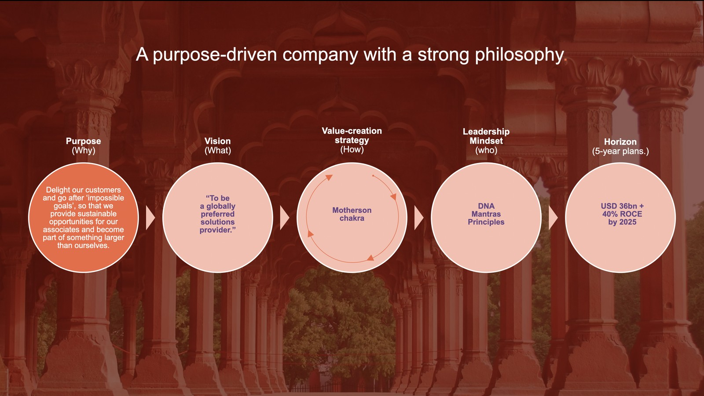
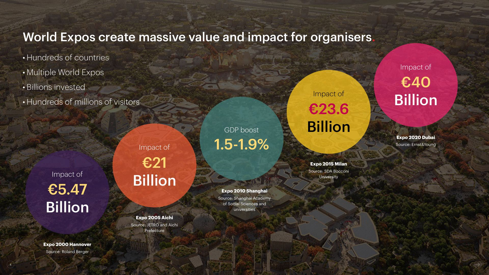
Two listed-company Annual Reports (SAMIL & MSWIL) landing in the same year as Motherson’s 50th anniversary. I managed them end-to-end.
Twelve global divisions to coordinate (India, Germany, UK, Asia), one Group CSO to report to, two hard regulatory deadlines.
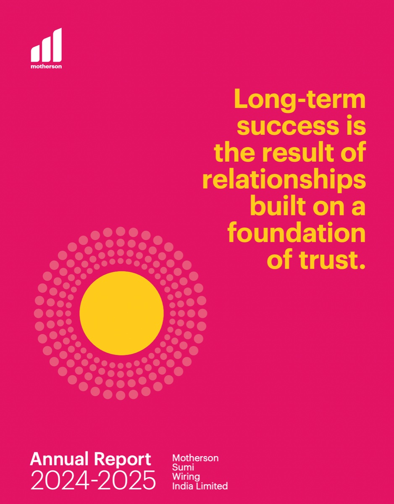
Audited every operational function at THEY and gave each problem a name — Human Intelligence, Automation, or AI. Then built the matrix to prioritise them. ₹5 lakhs/year off the admin budget.
Took a SaaS AI research platform from alpha to launched. Covered seven functions solo — including the referral program that drove 100+ test users in 2 months, no paid ads.
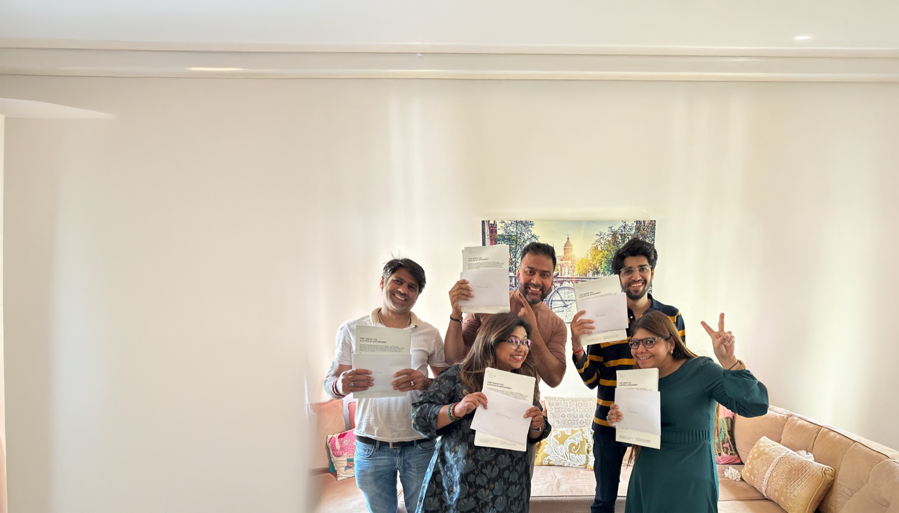
Led THEY’s B Corp certification — not the audit-prep version, the real one. Real policies, real benefits, real solar panels. Carbon Neutral in 2024.
Production ops for Motherson’s corporate films — travel, interviews, on-site execution with large internal teams. The kind of work where the concept fails if the logistics break.
Different surfaces — reports, decks, films, tools. One operating principle: notice the gap, then close it.
A framework that named every operational problem before solving it — and gave THEY a shared language for deciding what to automate, upskill, or hand to AI.
Every company has inefficiencies. Most don’t have a vocabulary for them. I built one. I reviewed company operations to identify areas for improvement, then grouped each opportunity into three categories — improving skills and ways of working (Human Intelligence), using tools to speed up tasks (Automation), and applying AI for smarter work (Artificial Intelligence). The framework gave THEY a shared language for deciding what kind of solution any given problem actually needed.
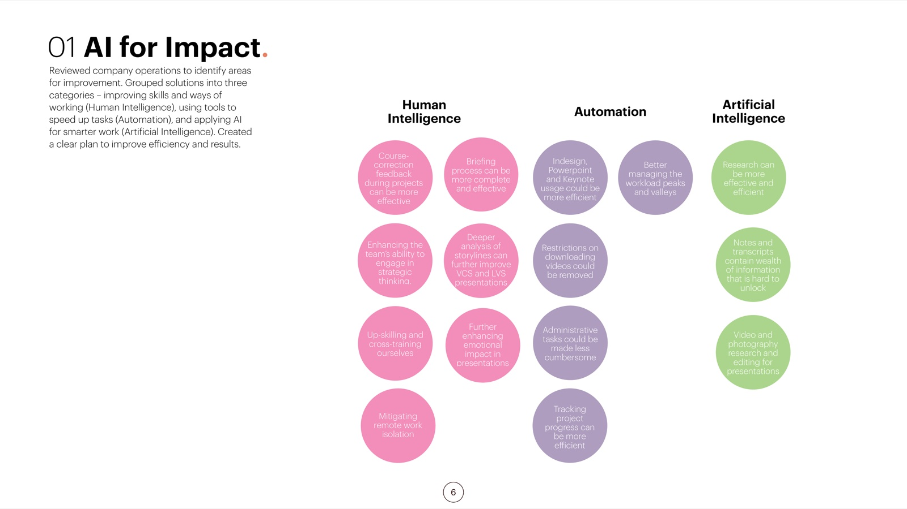
On top of the three categories I built an Impact–Effort matrix — so we didn’t just know what kind of problem we had, we knew which one to fix first. The result: finance and administration automated, the Annual Reports workflow sharpened, and the agency armed with a way to talk about its own work.
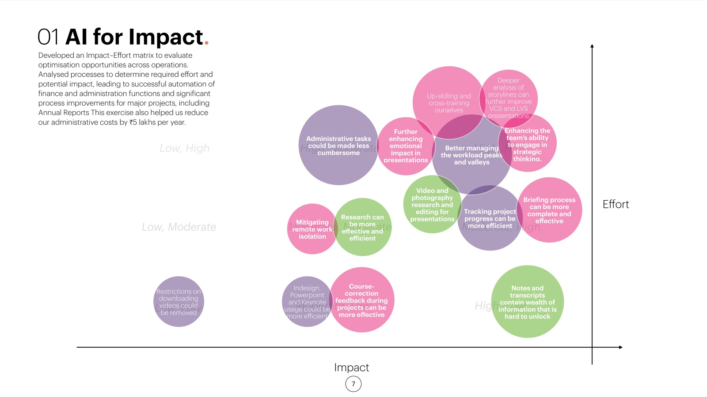
Across every deck, one job — take complex strategy and make it read in seconds. Crafted with the Chairman’s and Vice-Chairman’s offices, for investors, employees, and partners.
When the Chairman of a ~$14bn global auto group needs to land a story with investors, the slide either reads in three seconds or it doesn’t. I coordinated with top leadership — including the Chairman’s and Vice-Chairman’s offices — to craft the strategic communication decks for investor meetings and global summits, shaping narratives for global investors, employees, and partners. The same discipline runs through all of it: a company philosophy on a single frame, World-Expo economics at a glance, thirty years of five-year plans on one timeline.
Research first, narrative second, design third. In-depth research with strategy, finance, and divisional teams. Structured strategic messaging. Visual decks at the level of polish investor scrutiny demands. Collaborated cross-functionally to deliver presentations that enhanced investor confidence, supported customer engagement, and communicated group-wide achievements.
Single slides pulled from much larger decks — the full presentations stay confidential, but more samples are available on request.
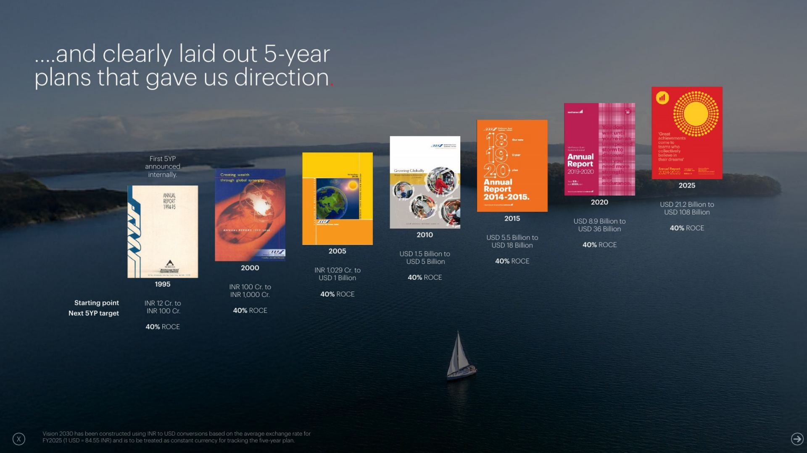
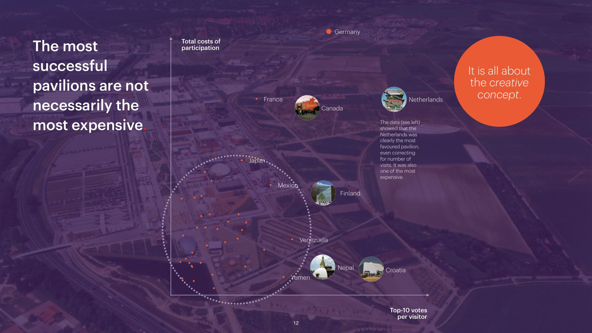
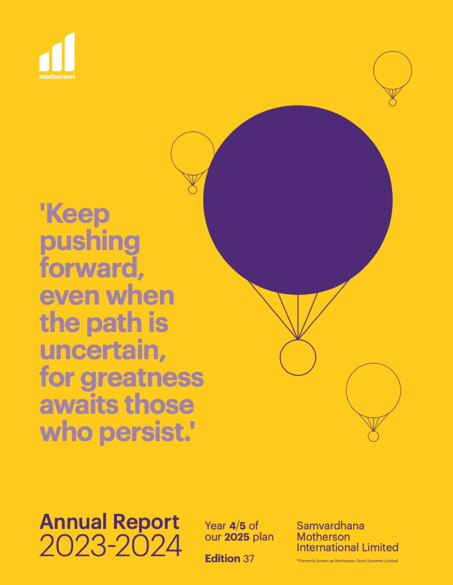
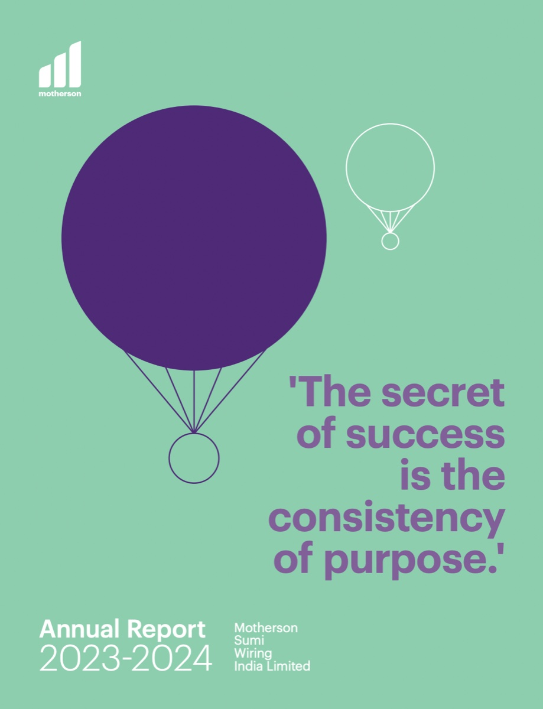
Managed SAMIL and MSWIL end-to-end during Motherson’s 50th anniversary — coordinated across 12 global divisions and reported into the Group CSO.
Two listed-company Annual Reports — SAMIL and MSWIL — landing in the same year as Motherson’s 50th anniversary. Each had to satisfy regulators, anchor investor confidence, and carry the celebratory narrative. Twelve global divisions across India, Germany, the UK, and Asia each needed to feed in. I managed them end-to-end.
Coordinated across strategy, design, content, sustainability, and divisional teams. Reported weekly to the Group CSO. Liaised with Marketing and Creative heads to keep brand and content aligned across both reports — twelve global divisions feeding into two hard regulatory deadlines.
Delivered on time, on-brand, and on the milestone. Streamlined workflows, reduced content turnaround time, and integrated diverse business narratives into reports that strengthened investor trust and stakeholder engagement.
Production and on-set logistics for the films that brought Motherson’s story to camera — large internal teams across multiple sites.
Corporate films are a high-budget medium where every choice carries weight. Coordinated logistics and production end-to-end — travel, interviews, on-site execution with large internal teams. The kind of work where the creative concept doesn’t save you if the logistics break on day two.
Embedded across product, marketing, and analytics for a SaaS AI research platform — from alpha testing to a referral program that drove 100+ test users in two months.
Sokrateque was a SaaS AI research platform with strong tech and no audience. I took it from alpha to launched — embedded across product, marketing, and analytics, from shaping the go-to-market approach to hands-on feature testing and user acquisition. The platform shipped market-ready and user-focused because someone was holding all seven threads at once.
Led THEY’s B Corp journey end-to-end. Real systemic changes across five pillars — not just audit prep.
Most companies treat B Corp as audit prep. We didn’t. Led the certification journey end-to-end with real changes across the company — from policies and customer feedback to employee benefits and community initiatives. Made the company carbon neutral in 2024 by calculating emissions to UN standards and offsetting with carbon credits, while shifting to renewables and installing solar panels at the Delhi office. Real action first, balance-sheet maths second. Recertified in 2026 — proof it stuck.
Certification was only half of it — the company had to feel the change. I designed the internal deck that carried THEY through its B Corp journey, owning the narrative flow and the visual design end to end. A few beats below — the full nineteen are one click away.
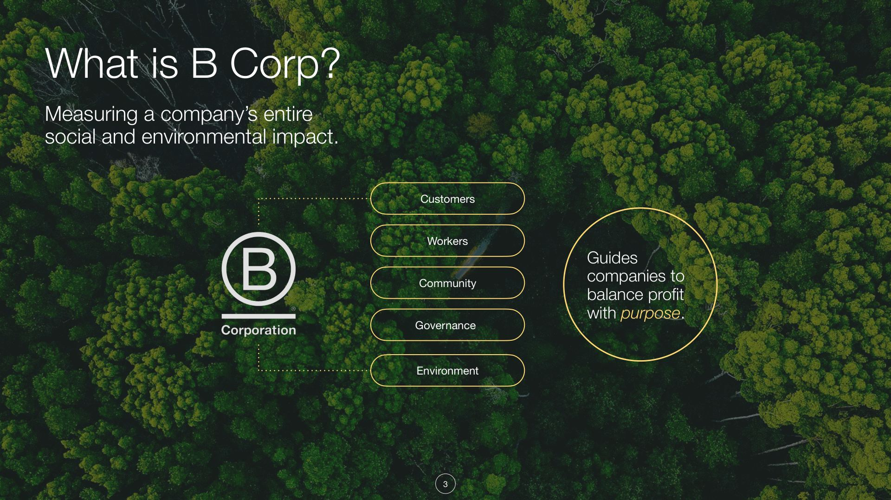
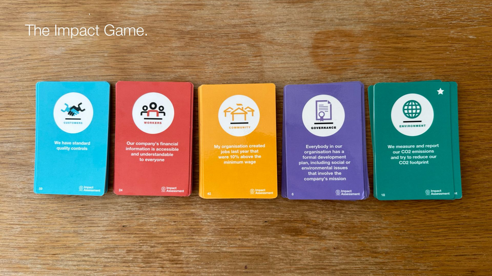
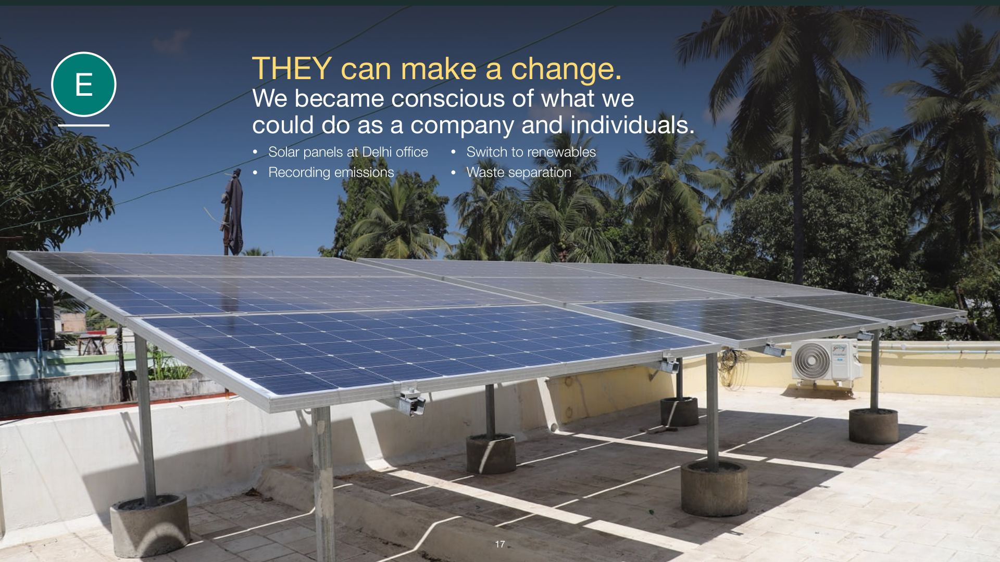
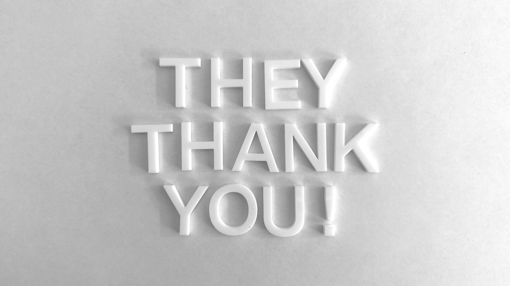
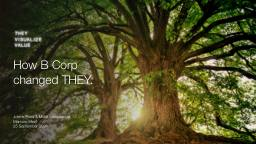
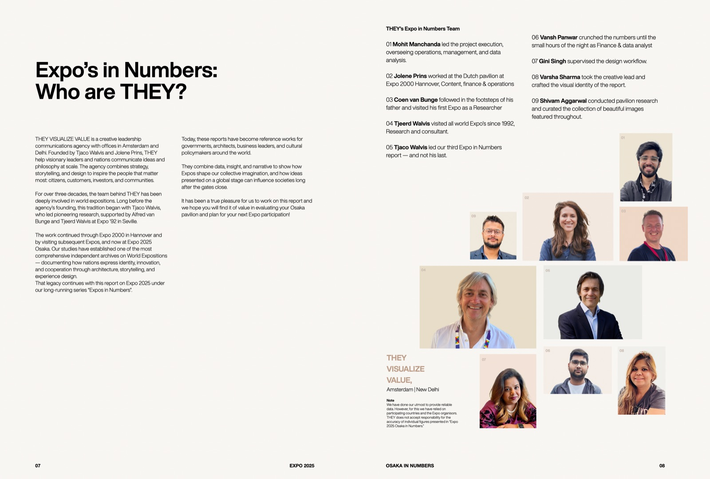
A first-of-its-kind benchmark report on self-built country pavilions at Expo 2025 Osaka — turning raw pavilion data into strategic guidance for future Expo teams.
No benchmark existed for self-built country pavilions at World Expos. Each country was effectively starting from scratch. Led the full project for Expo 2025 Osaka in Numbers — managed operations, analysed pavilion data, built the benchmark, and turned the findings into simple strategic insights and practical guidance pavilion leaders could actually act on. Future Expo teams now inherit the methodology instead of starting over.